전자계산기조직응용기사 (2004-08-08 기출문제)
1과목: 전자계산기 프로그래밍
1. 다른 어셈블리 언어의 소스 파일을 삽입하는 의사명령은?
- SEGMENT
- ORG
- INCLUDE
- EXTRN
(정답률: 77%)

2. 어셈블리어에서 매크로를 정의할 때 시작부분과 끝 부분에 쓰이는 명령은?
- BEGIN, END
- MACRO, ENDM
- MOPEN, ENDM
- START, END
(정답률: 58%)
3. C 언어에서 이스케이프 문자의 약호가 잘못된 것은?
- \t : tab
- \b : backspace
- \f : new line
- \o : null character
(정답률: 93%)
4. PLC와 릴레이(Relay) 제어의 비교 설명으로 옳지 않은 것은?
- PLC는 프로그램 변경만으로 제어내용의 변경이 가능하지만 릴레이 제어는 배선을 변경하여야 한다.
- PLC 제어는 많은 도면이 필요하고 부품수배, 조립, 시험에 시간이 많이 걸린다.
- 범용성 면에서 릴레이 제어 보다 PLC 제어가 우수하다.
- 경제성 면에서 릴레이 개수가 많은 경우에는 PLC를 사용하는 것이 경제적이다.
(정답률: 77%)
5. 좋은 프로그램 언어의 조건에 대한 설명으로 거리가 먼 것은?
- 개념이 단순하고 명료해야 한다.
- 프로그램 언어의 이식성은 문제가 안된다.
- 언어의 확장이 용이해야 한다.
- 프로그램의 효율성이 좋아야 한다.
(정답률: 92%)
6. C 언어 명령문 중 "do ∼ while" 문에 대한 설명으로 옳지 않은 것은?
- 명령의 조건이 거짓일 때 loop를 반복 처리한다.
- 명령의 조건이 거짓일 때도 최소한 한번은 처리한다.
- 피제어문이 복수일 때는 [ ]를 이용한다.
- 제일 마지막 문장에 ; 기호가 필요하다.
(정답률: 100%)
7. PLC에 적용되는 입력 전압으로 부적합한 것은?
- AC 220V
- DC 24V
- DC 220V
- DC 12V
(정답률: 54%)
8. 어셈블러에서 수행된 명령어의 결과와 CPU 상태에 대한 결과를 저장하고 있는 레지스터는 무엇인가?
- 세그먼트 레지스터
- 베이스 레지스터
- 플래그 레지스터
- 인덱스 레지스터
(정답률: 59%)
9. 어셈블리 프로그래밍에서 누산기라 하며, 산술 및 논리연산에 사용되는 레지스터는?
- AX
- BX
- CX
- DX
(정답률: 70%)
10. C 언어에서 연산자의 우선순위가 낮은 순서에서 높은 순서로 옳게 나열된 것은?
- 대입연산자 → 단항연산자 → 이항연산자 → 삼항연산자
- 대입연산자 → 삼항연산자 → 이항연산자 → 단항연산자
- 단항연산자 → 이항연산자 → 삼항연산자 → 대입연산자
- 삼항연산자 → 이항연산자 → 단항연산자 → 대입연산자
(정답률: 63%)
11. 프로그램 제어방법 중 반복문과 거리가 먼 것은?
- While 문
- Switch Case 문
- Do While 문
- For 문
(정답률: 86%)
12. 다음의 PC 어셈블리 명령 MOV와 XCHG에서 사용이 불가능한 명령은?
- MOV WORD1, WORD2
- XCHG AH, BL
- MOV AX, WORD1
- XCHG AX, WORD1
(정답률: 59%)
13. 정적 바인딩(static binding)에 해당하지 않는 것은?
- 언어구현시간
- 번역시간
- 링크시간
- 실행시간
(정답률: 알수없음)
14. 윈도우 프로그래밍에 관한 설명으로 옳지 않은 것은?
- 윈도우를 만들고 그 위에 각종 컨트롤들을 배치하는 것으로 사용자 인터페이스가 만들어진다.
- 특정 사건이 발생했을 때 이를 처리하는 프로그램을 작성하는 형태로 프로그램이 형성된다.
- 사용자 인터페이스의 작성이 용이하다.
- 윈도우 프로그램으로 작성한 응용 프로그램은 컴파일하지 않아도 실행 가능하다.
(정답률: 93%)
15. 서브클래스의 객체는 더 높은 클래스의 모든 특성을 소유하는 객체 지향 특성은?
- 다형성
- 상속성
- 캡슐화
- 적응성
(정답률: 80%)
16. 객체지향 프로그래밍 언어에 대한 설명으로 옳지 않은 것은?
- 객체지향 언어에서 객체의 상태는 그 객체의 일부로 선언된 지역변수로서 그 객체 외부의 구성부에서 접근할 수 있다.
- 각 객체는 지역 상태를 접근하고 바꿀 수 있는 함수와 프로시저를 포함하고 있다.
- 어떤 객체의 메소드를 호출하는 것은 그 객체에 메시지를 보낸다는 의미로 해석할 수 있다.
- 객체는 지역상태와 메소드에 대한 모형을 만들어 선언하는데 이 모형을 클래스라고 한다.
(정답률: 65%)
17. 오퍼랜드의 내용을 바꾸는 어셈블리 명령어는?
- XCHG
- MOV
- INC
- DEC
(정답률: 67%)
18. PLC 제어반의 설치시 주의사항으로 옳지 않은 것은?
- 핸디 로더의 조작과 PLC 기기의 사용이 편리한 곳에 설치
- 고압기기와는 동일 판넬내에 설치
- 주변 노이즈 특성이 양호한 곳에 설치
- Power, CPU, 입력카드, 출력카드 순으로 설치
(정답률: 93%)
19. 변수의 값이 저장된 기억 장소, 위치를 확인할 수 있는 것은 변수의 어떤 구성 요소에 의해서 가능한가?
- 이름
- 값
- 참조기능
- 대입기능
(정답률: 65%)
20. C 언어의 기억클래스 종류가 아닌 것은?
- external
- static
- register
- point
(정답률: 67%)
2과목: 자료구조 및 데이터통신
21. 십진수 "-10"을 1 의 보수로 표현하면?
- 11110101
- 11110110
- 00001010
- 00001001
(정답률: 67%)
22. 데이터 전송에서 아날로그 전송 매체를 통해 데이터 전송이 가능하도록 하는 기기는?
- 공동화기
- 다중화기
- 변복조기
- 디지털 서비스 유닛(DSU)
(정답률: 67%)
23. 해싱에서 동일한 버켓 주소를 갖는 레코드들의 집합을 의미하는 것은?
- synonym
- collision
- slot
- bucket
(정답률: 77%)
24. 다음 Incidence matrix에 대응하는 graph를 옳게 나타낸 것은?
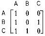
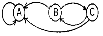
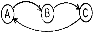
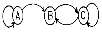
(정답률: 85%)
25. VAN의 통신처리 기능으로서의 회선제어, 접속 등의 통신 절차를 변환하는 기능은?
- 프로토콜 변환
- 부호 변환
- 양자화 변환
- 제어 변환
(정답률: 65%)
26. 3단계 데이터베이스 구조의 스키마 종류에 해당하지 않는 것은?
- 외부 스키마
- 개념 스키마
- 내부 스키마
- 관계 스키마
(정답률: 75%)
27. 많은 단말기로부터 많은 양의 통신을 필요로 하는 경우에 유리한 네트워크 형태는?
- 성형망
- 환형망
- 계층망
- 망형망
(정답률: 62%)
28. 다음 Tree의 디그리(Degree)는?
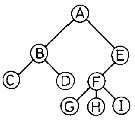
- 1
- 2
- 3
- 4
(정답률: 87%)
29. 동기식 시분할기와 비동기식 시분할기의 특징을 설명한 것이 아닌 것은?
- 비동기식이 동기식에 비해 효율이 우수하다.
- 비동기식 다중화기를 일명 통계적 다중화기라 하며 링크의 효율성을 높인다.
- 비동기식 다중화기는 데이터를 잠시 저장할 버퍼와 주소 제어회로 등이 별도로 필요하다.
- 비동기식 다중화기는 데이터 전송 각 채널에 대한 고정된 슬롯이 설정된다.
(정답률: 64%)
30. 디지털 전송의 특징으로 옳은 것은?
- 신호에 포함된 잡음도 증폭기에서 같이 증폭되므로 왜곡 현상이 심하다.
- 아날로그 전송보다 훨씬 적은 대역폭을 필요로 한다.
- 아날로그 전송과 비교하여 유지비용이 훨씬 더 요구된다.
- 디지털 신호 변환에 의해 아날로그나 디지털 정보의 암호화가 쉽게 구현 가능하다.
(정답률: 59%)
31. 일반적으로 자료 추가시 hash function 이 필요한 파일은?
- SAM
- ISAM
- DAM
- VSAM
(정답률: 70%)
32. 교환망을 이용하여 상대에게 데이터를 전송할 경우에 다이얼에 의한 상대의 호출과 변복조 장치 등을 데이터 전송이 가능한 상태로 설정하는 전송 제어의 단계는?
- 회선의 절단
- 정보의 전송
- 회선의 접속
- 데이터 링크의 확립
(정답률: 46%)
33. 베이직 순서제어에서 사용되는 단말이 아닌 것은?
- 주국
- 복합국
- 종속국
- 제어국
(정답률: 74%)
34. 데이터베이스관리시스템의 필수 기능에 해당하지 않는 것은?
- 정의기능
- 조작기능
- 보안기능
- 제어기능
(정답률: 84%)
35. 다음과 같은 이진트리를 후위순회(postorder traversal)한 결과는?
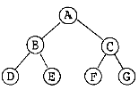
- ABCDEFG
- BDEACFG
- DEBAFGC
- DEBFGCA
(정답률: 93%)
36. 다음 설명에 해당되는 자료구조는?
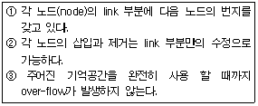
- 큐(queue)
- 스택(stack)
- 리스트(list)
- 트리(tree)
(정답률: 72%)
37. 경로설정 알고리즘 중 네트워크 정보를 요구하지 않으며, 송신처와 수신처 사이에 존재하는 모든 경로로 패킷을 전송하는 방식은?
- random 라우팅
- fixed 라우팅
- flooding
- adaptive 라우팅
(정답률: 65%)
38. 개방형 시스템의 7계층(OSI -7계층)에서 에러감시 및 제어를 하는 계층을 무엇이라 하는가?
- 물리 계층
- 데이터링크 계층
- 네트워크 계층
- 트랜스포트 계층
(정답률: 75%)
39. TCP/IP 군의 파일 전송 프로토콜(FTP)은 OSI 모델의 어느 계층과 같은가?
- 물리 계층
- 하위 계층
- 전송 계층
- 상위 계층
(정답률: 46%)
40. R = [26,5,37,1,61,11,59,15,48,19]의 데이타를 Quick sort 하려고 한다. 2회전 수행 후의 결과는?
- 26, 5, 37, 1, 61, 11, 59, 15, 48, 19
- 11, 5, 19, 1, 15, 26, 59, 61, 48, 37
- 1, 5, 11, 19, 15, 26, 59, 61, 48, 37
- 1, 5, 11, 15, 19, 26, 59, 61, 48, 37
(정답률: 58%)
3과목: 전자계산기구조
41. 하드웨어 방법으로 입출력장치의 우선순위를 결정하는 방식은?
- 폴링 I/O
- 데이지 체인 I/O
- 멀티인터럽트 I/O
- 핸드쉐이킹 I/O
(정답률: 67%)
42. 그림과 같은 회로에서 출력 Y는?(오류 신고가 접수된 문제입니다. 반드시 정답과 해설을 확인하시기 바랍니다.)
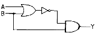
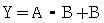
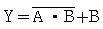
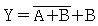
(정답률: 46%)
43. 10진수 956에 대한 BCD(Binary Coded Decimal) 코드는?
- 1101 0101 0110
- 1000 0101 0110
- 1001 0101 0110
- 1010 0101 0110
(정답률: 54%)
44. STACK을 올바르게 설명한 것은?
- FIFO 구조를 갖는다.
- 1-Address 구조를 갖는다.
- PUSH 명령에 의해 데이터를 꺼낸다.
- Return Address를 저장하기 위한 memory이다.
(정답률: 67%)
45. 반가산기 회로의 carry와 sum을 나타내는 논리식은?
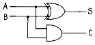
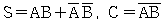
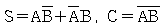
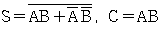
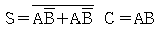
(정답률: 67%)
46. interleaved memory에 대한 설명과 관계가 없는 것은?
- 중앙처리장치의 쉬는 시간을 줄일 수 있다.
- 단위시간당 수행할 수 있는 명령어의 수를 증가시킬 수 있다.
- 이 기억장치를 구성하는 모듈의 수 만큼의 단어들에 동시 접근이 가능하다.
- MAR(Memory address Register)은 두 모듈당 한 개씩 있다.
(정답률: 64%)
47. 다음은 인터럽트 체제의 동작을 나열 하였다.수행 순서를 올바르게 표현한 것은?
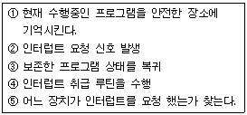
- ②→⑤→①→④→③
- ②→①→④→⑤→③
- ②→④→①→⑤→③
- ②→①→⑤→④→③
(정답률: 86%)
48. 인터럽트 벡터에 필수적인 것은?
- 분기번지
- 메모리
- 제어규칙
- Acc
(정답률: 60%)
49. 다음 마이크로 오퍼레이션과 관련 있는 사이클은?
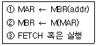
- FETCH CYCLE
- EXECUTE CYCLE
- INDIRECT CYCLE
- INTERRUPT CYCLE
(정답률: 65%)
50. I/O operation과 관계없는 것은?
- channel
- handshaking
- interrupt
- emulation
(정답률: 69%)
51. CPU와 입출력 인터페이스 사이에서는 상태 정보와 제어 정보만을 교환하게 하고, 입출력 데이터는 주변장치와 주기억 장치간에 직접 교환되게 하는 입출력 방법은?
- DMA 입출력
- 채널에 의한 입출력
- 인터럽트에 의한 입출력
- 프로그램에 의한 입출력
(정답률: 67%)
52. 폰노이만(Von neuman)형 컴퓨터의 연산자 기능이 아닌 것은?
- 전달 기능
- 제어 기능
- 추적 기능
- 입출력 기능
(정답률: 86%)
53. 컴퓨터의 주기억장치 용량이 8192비트이고, 워드 길이가 16비트일 때 PC(Program Counter), AR(Address Register)와 DR(Data Register)의 크기는?
- PC 8, AR 9, DR 16
- PC 9, AR 9, DR 16
- PC 16, AR 16, DR 16
- PC 8, AR 16, DR 16
(정답률: 알수없음)
54. B 레지스터의 내용을 P 제어 신호에 따라 A 레지스터에 기억하기 위한 회로는?
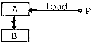
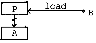
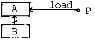
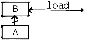
(정답률: 50%)
55. 컴퓨터의 연산에서 단항(unary) 연산에 해당되지 않는 연산은?
- 시프트(shift)
- 컴플리먼트(complement)
- 로테이트(rotate)
- 가산(add)
(정답률: 67%)
56. 65,536 워드(word)의 메모리 용량을 갖는 컴퓨터가 있다. 프로그램 카운터(PC)는 몇 비트인가?
- 8
- 16
- 32
- 64
(정답률: 79%)
57. 다음과 같은 마이크로 오퍼레이션이 일어나는 상태는?
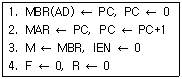
- Fetch
- Indirect
- Interrupt
- execute
(정답률: 50%)
58. 다음 인터럽트 중 최우선권이 주어져야 하는 경우는?
- 정전
- 명령의 오동작
- 자료 전달의 오류
- 입출력 장치의 오동작
(정답률: 84%)
59. 다음 연산회로에서 S1S0=11 이고, Ci=1일 때 FA회로 출력 F는?
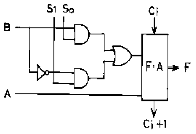
- F=A+B+1
- F=A+B‘+1
- F=A+1
- F=A
(정답률: 73%)
60. 인출 사이클(fetch cycle)의 첫 마이크로 오퍼레이션은?
- MAR ← PC
- AC ← AC + MBR
- MAR ← MBR
- IR ← MBR
(정답률: 75%)
4과목: 운영체제
61. 공유 메모리를 사용하는 병렬 프로세스들의 상호배제를 위한 요구조건이 아닌 것은?
- 자원들은 이용 가능한 자원 풀(pool)로부터 프로세서에 의해 요구되고 할당된다.
- 두 개 이상의 프로세스들이 동시에 임계영역에 있어서는 안된다.
- 어떤 프로세스도 임계구역으로 들어가는 것이 무한정 연기되어서는 안된다.
- 임계구역 바깥에 있는 프로세스가 다른 프로세스의 임계구역 진입을 막아서는 안된다.
(정답률: 44%)
62. 스케쥴링 방식 중 라운드 로빈 방식에서 시간간격을 무한히 크게 하면 어떤 방식과 동일하게 되는가?
- LIFO 방식
- FIFO 방식
- HRN 방식
- multilevel queue 방식
(정답률: 50%)
63. 인터럽트 처리과정을 순서대로 옳게 나열한 것은?
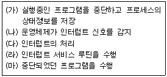
- (가) - (나) - (다) - (라) - (마)
- (나) - (가) - (다) - (마) - (라)
- (가) - (나) - (라) - (다) - (마)
- (나) - (가) - (라) - (다) - (마)
(정답률: 72%)
64. 교착상태 해결 방안으로 발생가능성을 인정하고 교착 상태가 발생하려 할 때 교착상태 가능성을 피해가는 방법은?
- 예방(prevention)
- 발견(detection)
- 회피(avoidance)
- 복구(recovery)
(정답률: 74%)
65. 사용자가 하나의 작업 명령을 실행시킨 후에도 그 작업의 실행이 완료되기 전에, 또 다른 새로운 작업 명령들을 단말기에서 수행할 수 있는 UNIX 쉘의 실행 방식은?
- 백그라운드(background) 작업
- 포그라운드(foreground) 작업
- 파이프라인(pipeline)
- 스워퍼 프로세스(swapper process)
(정답률: 55%)
66. UNIX 명령어 중 파일에 대한 엑세스(읽기, 쓰기, 실행) 권한을 설정하여 사용자에게 제한적인 권한을 주려고 할 때 사용하는 명령어는?
- chmod
- chown
- mkdir
- ls
(정답률: 73%)
67. FIFO와 RR 스케줄링 방식을 혼합한 것으로 상위 단계에서 완료되지 못한 작업은 하위 단계로 전달되어 마지막 단계에서는 RR 방식을 사용하는 것은?
- SJF
- SRT
- HRN
- Multilevel Queue
(정답률: 알수없음)
68. 분산운영체제 구조 중 다음의 특징을 갖는 구조는?
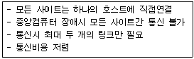
- 링 연결구조(RING)
- 다중접근 버스 연결구조(MULTI ACCESS BUS)
- 계층 연결구조(HIERARCHY)
- 성형 연결구조(STAR)
(정답률: 62%)
69. 운영체제를 자원 관리자(resource manager)라는 관점으로 보았을 때, 자원들을 관리하는 과정을 순서대로 옳게 나열한 것은?
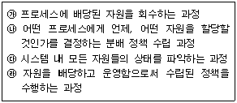
- ㉮-㉯-㉰-㉱
- ㉰-㉯-㉱-㉮
- ㉮-㉰-㉯-㉱
- ㉰-㉱-㉯-㉮
(정답률: 64%)
70. 다음 표는 고정 분할에서의 기억 장치 단편화 현상을 보이고 있다. 내부 및 외부 단편화(Fragmentation)로 인한 기억 공간의 낭비는 몇 %인가?
- 69.57 %
- 62.31 %
- 37.68 %
- 24.64 %
(정답률: 55%)
71. 레코드가 직접 엑세스 기억장치의 물리적 주소를 통해 직접 액세스 되는 파일 구조는?
- 순차파일(sequential file)
- 인덱스된 순차파일(indexed sequential file)
- 직접 파일(direct file)
- 분할된 파일(partitioned file)
(정답률: 84%)
72. CPU의 개입없이 입출력 장치와 주기억 장치와의 데이터 전송이 이루어지는 방법으로 프로그램이 실행되는 동안에 입출력을 위한 인터럽트의 발생횟수를 최소화시켜 컴퓨터 시스템의 효율을 높이기 위한 방법은?
- DMA
- Blocking
- Spooling
- Scanning
(정답률: 75%)
73. 분산 파일 시스템의 명칭 부착에 관한 내용 중 파일의 이름에 대하여 파일의 물리적인 기억장소에 대한 어떠한 정보도 나타내지 않아야 한다는 개념은?
- 위치 투명성(location transparency)
- 위치 독립성(location independency)
- 접근 투명성(access transparency)
- 복사 투명성(replication transparency)
(정답률: 알수없음)
74. UNIX에서 두 프로세스를 연결하여 프로세스간 통신을 가능하게 하며, 한 프로세스의 출력이 다른 프로세스의 입력으로 사용됨으로써 프로세스간 정보 교환이 가능하도록 하는 것은?
- pipe
- signal
- fork
- preemption
(정답률: 77%)
75. 파일 디스크립터에 포함되는 내용이 아닌 것은?
- 파일의 내용
- 파일의 구조
- 보조 기억장치의 유형
- 생성날짜
(정답률: 39%)
76. 세그먼트 기법 시스템에 대한 설명으로 틀린 것은?
- 세그먼트 기법에서 기억 장치 보호를 위해 기억 장치 보호키(storage protection key)를 주로 사용한다.
- 세그먼트 시스템에서 주로 사용하는 할당 전략은 최초 적합과 최적 적합이다.
- 세그먼트 기법은 가변 크기의 블록을 사용하며, 각각의 블록은 논리적인 단위이다.
- 수행중인 프로그램은 기억장치의 연속된 블록을 할당 받아야 한다.
(정답률: 64%)
77. 스래싱(thrashing)에 관한 설명으로 옳지 않은 것은?
- 스래싱이 발생하면 CPU가 제 기능을 발휘하지 못한다
- 프로세스가 프로그램 수행에 소요되는 시간보다 페이지 교환에 소요되는 시간이 더 큰 경우를 의미한다.
- 스래싱을 방지하기 위해서는 멀티프로그래밍의 정도(degree)를 높여야 한다.
- 프로세스들이 워킹 셋을 확보하지 못한 결과이다.
(정답률: 62%)
78. 시스템 타이머에서 일정한 시간이 만료된 경우나 오퍼레이터가 콘솔상의 인터럽트 키를 입력한 경우 발생하는 인터럽트는?
- 프로그램 검사 인터럽트
- SVC 인터럽트
- 입출력 인터럽트
- 외부 인터럽트
(정답률: 47%)
79. 페이지 교체(replacement) 알고리즘 중에서 각 페이지들이 얼마나 자주 사용되었는가에 중점을 두어 참조된 횟수가 가장 적은 페이지를 교체시키는 방법은?
- FIFO(First-In First-Out)
- LRU(Least Recently Used)
- LFU(Least Frequently Used)
- NUR(Not Used Recently)
(정답률: 65%)
80. 디스크 스케쥴링 기법 중 C-SCAN 방법에 대한 설명으로 옳은 것은?
- 트랙들을 탐색할 때 처리시간이 가장 짧은 것을 우선하여 처리한다.
- 트랙들을 탐색할 때 가장 나중에 요청된 것을 우선하여 처리한다.
- 트랙들을 탐색할 때 바깥쪽 실린더에서 안쪽 방향으로 이동한다.
- 트랙들을 탐색할 때 임의로 작업을 선택하여 처리한다.
(정답률: 82%)
5과목: 마이크로 전자계산기
81. 명령어의 번지 필드가 가르키는 번지에 유효 번지가 있는 어드레싱 모드는?
- base register addressing mode
- indexed addressing mode
- relative addressing mode
- indirect addressing mode
(정답률: 67%)
82. 연산자(operation code)의 기능에 옳지 않은 것은?
- 함수 연산 기능
- 주소 지정 기능
- 입출력 기능
- 제어 기능
(정답률: 42%)
83. 실제 하드웨어 시스템이 만들어지기 전에 미리 실행해 보아 완성된 시스템에서 디버깅을 보다 용이하게 할 수 있는 기능을 가진 장치를 무엇이라 하는가?
- Editor
- Compiler
- Locator
- Emulator
(정답률: 69%)
84. 자기 테이프에서 레코드사이를 구별해 주는 것은?
- block
- sector
- IRG
- track
(정답률: 60%)
85. 다음 명령어 중 단일 오퍼랜드 명령어는?
- ADD
- COMPARE
- AND
- COMPLEMENT
(정답률: 64%)
86. 시프트 레지스터(shift register)의 입출력 방식 중 시간이 가장 적게 걸리는 것은?
- 직렬입력-직렬출력
- 직렬입력-병렬출력
- 병렬입력-직렬출력
- 병렬입력-병렬출력
(정답률: 75%)
87. 명령 실행 사이클의 동작 명령으로서 번지의 명령이나 프로그램 루프의 실행횟수를 계산하는데 유용한 명령으로 지정된 번지에 저장된 워드의 내용을 1 증가시킨 후 그 결과가 0 이면 다음 명령을 건너뛰고 아니면 그대로 다음 명령을 실행시키는 명령은?
- ISZ 명령
- BSA 명령
- BUN 명령
- STA 명령
(정답률: 60%)
88. 저속 장치에 연결되며, 다수의 입출력장치를 동시에 운영할 수 있는 채널은?
- selector channel
- interactive channel
- independent channel
- multiplexer channel
(정답률: 72%)
89. 반도체 기억소자 중 재생(Refresh) 과정을 필요로 하는 것은?
- PROM
- EAROM
- SRAM
- DRAM
(정답률: 79%)
90. 인터럽트 발생시 각 장치 내에 있는 상태 레지스터의 인터럽트 비트를 우선순위에 따라 차례로 조사함으로써 어느 인터럽트가 발생되었는지를 알아내는 방법은?
- 인터럽트 마스크
- 벡터 인터럽트 방식
- Polling 방식
- Strobe Control
(정답률: 62%)
91. 스택(Stack)과 관계없는 명령어는?
- CALL
- POP
- PUSH
- MOVE
(정답률: 74%)
92. Read/Write나 INT(interrupt), RESET 등의 신호는 어느 버스에 싣게 되는가?
- 자료 버스
- 주소 버스
- 제어 버스
- 보조 버스
(정답률: 79%)
93. 다음 설명 중 옳지 않은 것은?
- virtual memory는 실제의 번지 공간(address space)이 확대된다.
- virtual memory는 속도를 증가시키기 위해서 사용된다.
- virtual memory는 소프트웨어에 의해 실현된다.
- virtual memory에서 사용할 수 있는 보조기억장치는 DASD(Direct Access Storage Device)이다.
(정답률: 73%)
94. 시스템 소프트웨어에 속하지 않는 것은?
- 패키지(package)
- 컴파일러(compiler)
- 어셈블러(assembler)
- 인터프리터(interpreter)
(정답률: 82%)
95. ALU(연산 논리 장치)의 기능으로서 적합하지 않은 것은?
- 논리연산
- 2진수의 가감산
- 2진수 정보의 전달
- 좌 혹은 우로의 시프트(shift)
(정답률: 64%)
96. 그림과 같은 방식으로 CRT 화면에 문자를 표시하기 위하여 사용되는 ROM의 역할은?
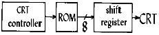
- 문자 패턴을 기억한다.
- ASCII code를 기억한다.
- 제어 프로그램을 기억한다.
- 화면의 커서(Cursor) 위치를 기억한다.
(정답률: 55%)
97. 쌍방향(bi-directional) 버스의 성격을 갖는 것은?
- data bus
- address bus
- control bus
- system bus
(정답률: 64%)
98. Stack 메모리가 사용되는 경우가 아닌 것은?
- 서브루틴을 실행할 때
- CALL 명령이 수행될 때
- Branch 명령이 실행될 때
- 인터럽트가 받아들여졌을 때
(정답률: 58%)
99. 누산기가 꼭 필요한 명령 형식은?
- 0-주소 인스트럭션
- 1-주소 인스트럭션
- 2-주소 인스트럭션
- 3-주소 인스트럭션
(정답률: 73%)
100. Cycle steal과 관련 있는 것은?
- DMA
- Data buffer
- Internal bus
- Interrupt
(정답률: 67%)